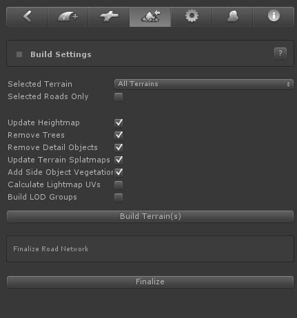
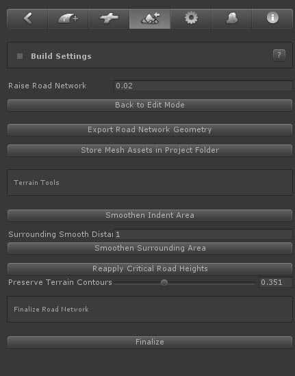

EasyRoads3D will auto adjust the terrain shape and vegetation to match the created road network. This section explains all the options and how you can optimize the system to your project specific needs.
[include link to General Settings discussing Terrain Management]
To flatten the terrain according the road network shape, activate the terrain tab from the main EasyRoads3D Toolbar in the Inspector.

Before flattening the terrain you can choose among a number of options to improve the performance / workflow.
- Raise Road Network: This can be used to move the road network higher above the terrain to avoid z-fighting with the terrain
- Select Terrain: In case you have multiple terrains in your scene you can choose to flatten all terrain at once or you can select one of the terrains from the dropdown or by CTRL + ALT + click the terrain. Especially when you are working on a specific area of your scene and during testing, it is recommended to select that terrain from the dropdown. It will save valuable time.
- Remove Trees: This will remove trees affected by the road network.
- Remove Detail Objects: This will remove detail objects affected by the road network.
- Update Terrain Splatmaps: This will blend the road shape in the terrain according the splatmap settings of each road object.
- Add Side Object Vegetation: This will add all side object trees linked to terrain tree prototypes to the trespective terrain object(s).
- Calculate Road Tangents: This will add additional tangent info to the road, crossings and side objects mesh data which is required when you use bumped shaders.
- Calculate Lightmap UVs: This will generate lightmap UVs for road, crossings and side objects. Note: Unity will rebuild the mesh resulting in different vertex count. This means all crossings need to be rebuild after switching back to Edit Mode. To save time during development you may want to keep this setting switched off.
- Build LOD Groups: (inactive) This will generate LOD groups for each road.
- Build Terrain(s): This starts the buildprocess. You will see a progressbar. This progressbar is not yet fully optimized, it may seem nothing is happening. Especially scenes with many trees and details objects can take some time.
- Finalize Road Network: This will remove all script components from all road network objects. Only use this option when all work on the road network is completed. It is recommended to duplicate the scene first in the project folder and keep this scene as a backup just in case changes to the road network are actually required. This Finalize option is especially intended for when only side objects are involved or when custom road shapes are used that do not require terrain deformation. This Finalize option is also available in Build Mode covered here below.
After the Build Terrain process has finished the Inspector will update:

- Raise Road Network: This can be used to move the road network higher above the terrain to avoid z-fighting with the terrain
- Back to Edit Mode: Click this button to switch back to Edit Mode to continue working on the road network.
- Export Road Network Geometry: This will export the full road network to .obj. This is useful in case you want to manually add detail to the road network in a modelling application.
- Store Mesh Assets in Project Folder: Currently the mesh data is stored in the scene file. This button will store the data in the project folder which can be useful in the case you want to for example create prefabs. The mesh assets are currently stored in the project folder as is. When you remove roads, crossings or deactivate side objects afterwards these assets will not be removed. If you want to store mesh assets in the project folder, it is recommended to do this once you are finished creating the road network before finalizing the scene (which is optional).
- Smoothen Indent Area: This will smoothen the surrounding area just outside the indent area. In order for this to work the surrounding area must cover multiple terrain points.
- Smoothen Surrounding Area: This will smoothen the area at the end of the surrounding area one the edge with the original terrain height.
- Reapply Critical Road Heights: This button can be used after manual height alterations near roads. It will reapply the correct height to those terrain points that should exactly match the road shape.
- Preserve Terrain Contours: This slider can be used to preserve the natural shape of the terrain. A value of 0 means that the terrain will exactly match the shape of the white surfaces surrounding the roads. A setting of 1 will rebuild the full terrain shape in this area but gradually move the heights towards the critical terrain heights that should always match the road shape.
- Finalize Road Network: This will remove all script components from all road network objects. Only use this option when all work on the road network is completed. It is recommended to duplicate the scene first in the project folder and keep this scene as a backup just in case changes to the road network are actually required.
|